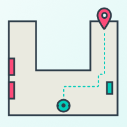
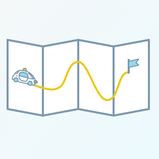

-
Books To Book
A subscription based book-sharing website - The project I'm currently working on. (GitHub Repo)
-
Build My World
Build My World (project 1 of 5 from Udacity Robotics Software Engineer Nanodegree)
-
Go Chase It!
Go Chase It! (project 2 of 5 from Udacity Robotics Software Engineer Nanodegree)
-
Where Am I?
Where Am I? (project 3 of 5 from Udacity Robotics Software Engineer Nanodegree)
-
Map My World
Map My World (project 4 of 5 from Udacity Robotics Software Engineer Nanodegree)
-

Home Service Robot
Home Service Robot (project 5 of 5 from Udacity Robotics Software Engineer Nanodegree)
-
Joy Ride
Parallel Parking (project 1 of 5 from Udacity Intro to Self Driving Car Nanodegree)
-
Two Dimensional Histogram Filter
Two Dimensional Histogram Filter (project from Udacity Intro to Self Driving Car Nanodegree)
-
Implement a Matrix Class
Implement a Matrix Class (project 2 of 5 from Udacity Intro to Self Driving Car Nanodegree)
-
Translate Python to C++
Translate Python to C++ (project 3 of 5 from Udacity Intro to Self Driving Car Nanodegree)
-

Implement Route Planner
Planning an Optimal Path (project 4 of 5 from Udacity Intro to Self Driving Car Nanodegree)
-
Traffic Light Classifier
Traffic Light Classifier (project 5 of 5 from Udacity Intro to Self Driving Car Nanodegree)
-
Finding Lane Lines on the Road
Finding Lane Lines on the Road (project 1 of 9 from Udacity Self-Driving Car Engineer Nanodegree)
-
Advanced Lane Finding
Advanced Lane Finding (project 2 of 9 from Udacity Self-Driving Car Engineer Nanodegree)
-
Traffic Sign Classifier
Traffic Sign Classifier (project 3 of 9 from Udacity Self-Driving Car Engineer Nanodegree)
-
Behavioral Cloning
Behavioral Cloning (project 4 of 9 from Udacity Self-Driving Car Engineer Nanodegree)
-
Extended Kalman Filters
Extended Kalman Filters (project 5 of 9 from Udacity Self-Driving Car Engineer Nanodegree)
-
Kidnapped Vehicle
Kidnapped Vehicle (project 6 of 9 from Udacity Self-Driving Car Engineer Nanodegree)
-
Highway Driving
Highway Driving (project 7 of 9 from Udacity Self-Driving Car Engineer Nanodegree)
-
 PID Controller
PID Controller
PID Controller (project 8 of 9 from Udacity Self-Driving Car Engineer Nanodegree)
-
 Programming a Real Self-Driving Car
Programming a Real Self-Driving Car
System Integration (project 9 of 9 from Udacity Self-Driving Car Engineer Nanodegree)
-
Investigate a Relational Database
Investigate a Relational Database (project 1 of 3 from Udacity Programming for Data Science with Python)
-
Explore US Bikeshare Data
Explore US Bikeshare Data (project 2 of 3 from Udacity Programming for Data Science with Python)